Steam 上手指北¶
什么是 Steam¶
Steam 是 Valve 推出的电子游戏数字分发平台。Steam 集合了多种功能，如数字版权管理、游戏服务器匹配和反作弊系统，以及社交网络和游戏流媒体服务。Steam 还为用户提供自动更新游戏、游戏存档云存储，以及包括好友列表和游戏内聊天在内的社区功能。根据 CompareCamp2020 年统计，Steam 平台是全球最大的电脑游戏数字分发平台，占全球 50%-70%的电脑游戏下载量。 2003 年 9 月， Valve 将其作为一款软件客户端推出，提供自动更新游戏的功能，这一功能在 2005 年末扩展到了第三方游戏发行商发行的作品。
下载与安装¶
使用搜索引擎搜索 Steam 并进入域名为 https://store.steampowered.com/ 的网站
警告
请不要进入类似 Steam 管家 、 Steam 助手 之类的站点并认准官方域名
请务必检查站点域名，它一般在浏览器窗口的上方。
注：商城页面所显示语言可能与您计算机的语言与所在地区有关，请以实际情况为准
点击右上角绿色的 安装 Steam 按钮以前往 Steam 安装程序下载页面
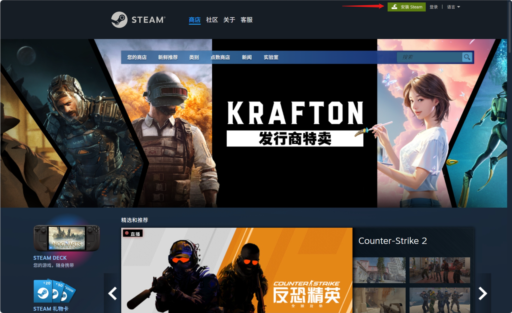
点击蓝色的 安装 STEAM 按钮以下载安装程序
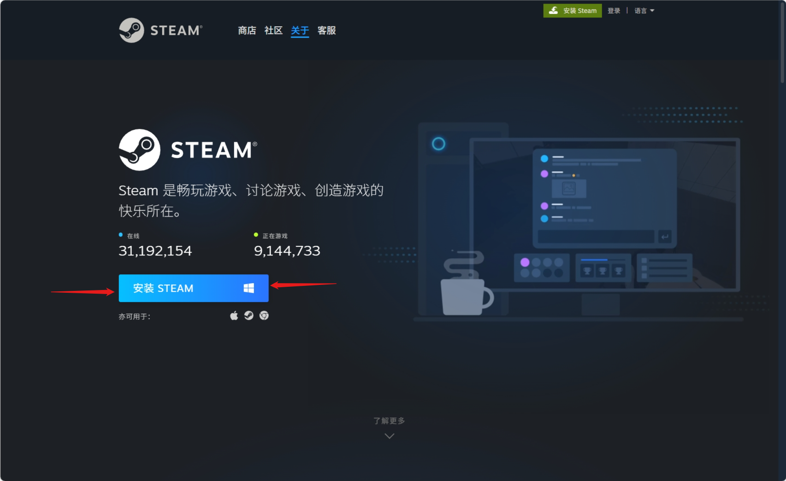
你应该可以在下载器的下载记录中找到名为 SteamSetup.exe 的可执行文件，运行这个可执行文件并按照提示进行相应的设置。
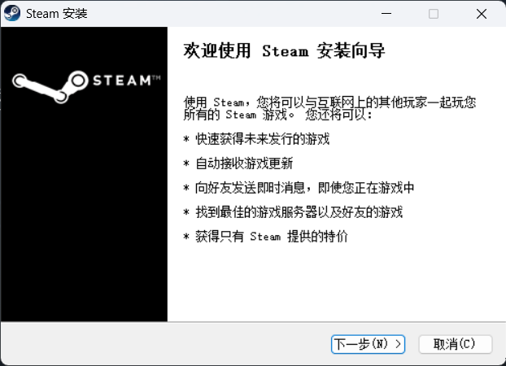
当安装程序提示 Steam 已安装在你的操作系统时，点击完成便可退出安装程序并完成安装。
警告
请检查Steam的安装路径中是否带有中文。若有，请将其修改为不包含中文的路径。
错误格式：D:\软件\Steam\
正确格式：D:\Software\Steam\
小知识
通常软件会安装在系统盘符的 Program Files 或 Program Files (x86) 中，你一般可以放心地相信安装程序的默认路径。
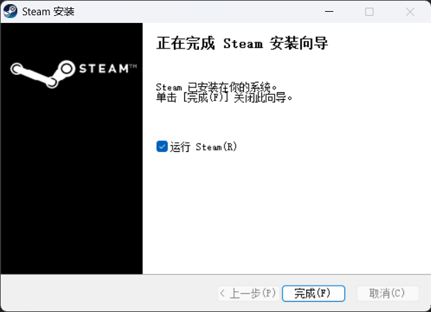
运行并注册¶
安装完毕后，你可以在 桌面 或 “开始”菜单 中找到 Steam 的快捷方式，运行快捷方式即可启动 Steam。
小知识
若你点击完成前没有取消默认 “运行 Steam” 的复选框，安装程序会在关闭后自动打开 Steam。
运行后你可能要等待 Steam 进行更新。更新完毕后你就会进入 Steam 的登陆页面。
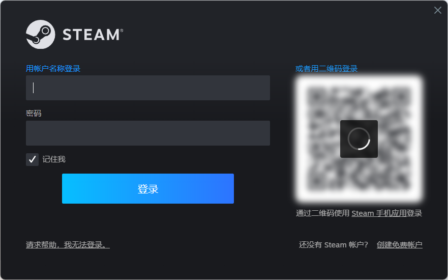
若你拥有 Steam 账户，你可以直接在其中登陆。（当然如果你有的话大概率也用不到这篇文章吧）。如果没有，你可以点击右下角 创建免费账户 来进入浏览器注册界面。
在注册页面根据提示填入你的电子邮件地址并重复以确认，在选择地区后进行人机验证，随后勾选 我已年满 13 周岁并同意《Steam 订户协议》和《Valve 隐私政策》的条款，点击 继续 进入下一步。
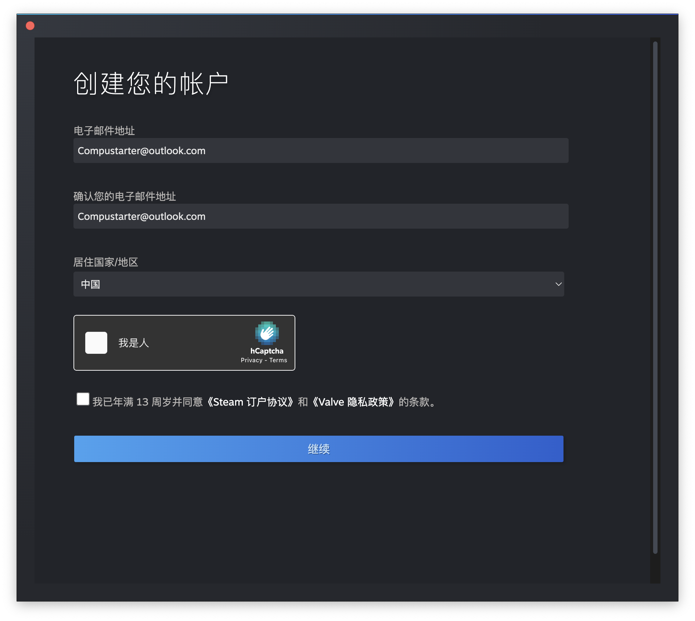
随后页面会提示你查看你的邮箱来完成验证，你需要进入你的邮箱来查看来自 Steam 的验证邮件。
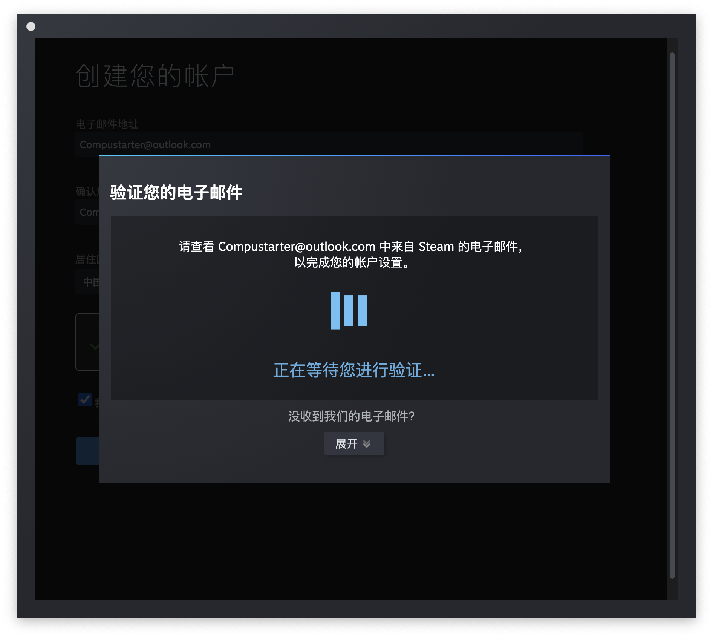
登录你先前填写的电子邮箱，在收件箱中找到来自 Steam 的验证邮件，点击其中的点击 验证我的电子邮件 进行电子邮件验证。
警告
Steam 通常会使用域名为 steampowered.com 的邮箱给你发送地址，其他的地址均为假冒！
错误格式：noreply@steamguanfang.com
正确格式：noreply@steampowered.com
小知识
这一步通常需要你在浏览器中进行。
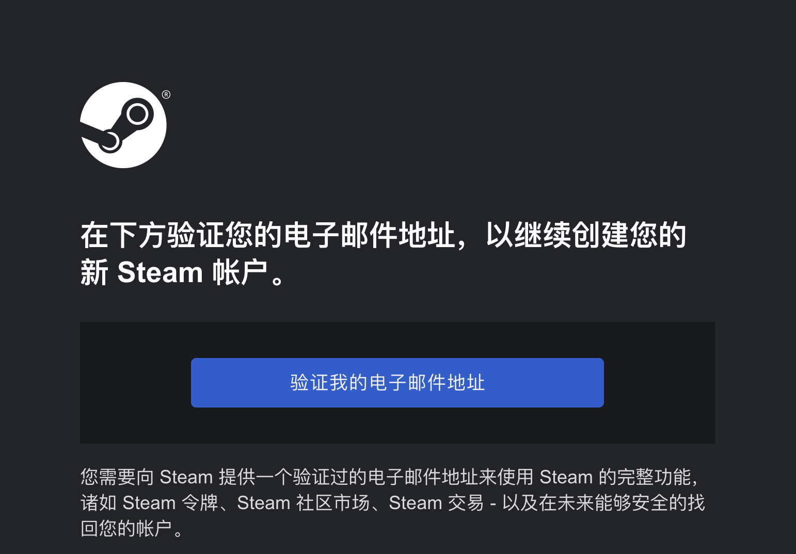
等待页面提示 电子邮件已验证 后返回 Steam 窗口中，并填写账户名称和密码。
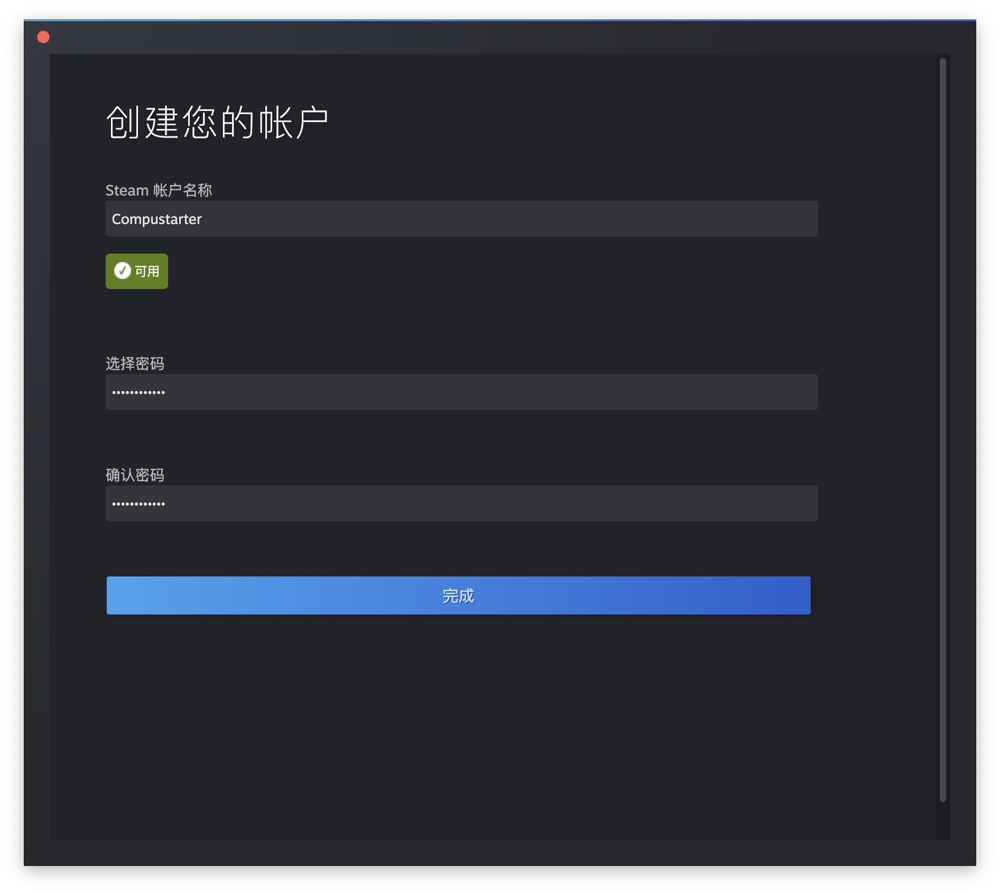
警告
账户名称为此后登录 Steam 时重要凭证，不可更改或与他人重复。
警告
两次输入的密码需相同。
随后点击 完成 即可结束 Steam 账户注册。
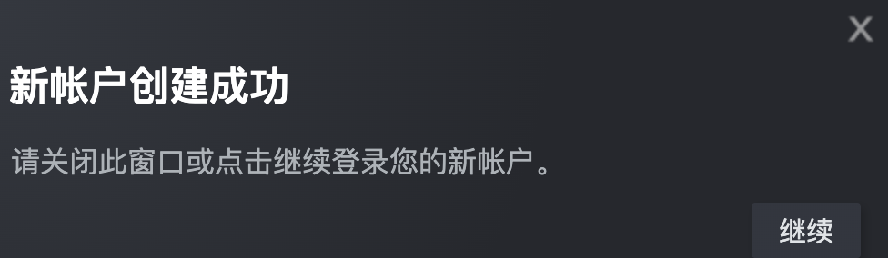
登录桌面客户端¶
在登录界面键入你注册时填写的用户名与密码，点击登录。若初次登陆 Steam 可能会要你输入验证码以验证账户所有权。
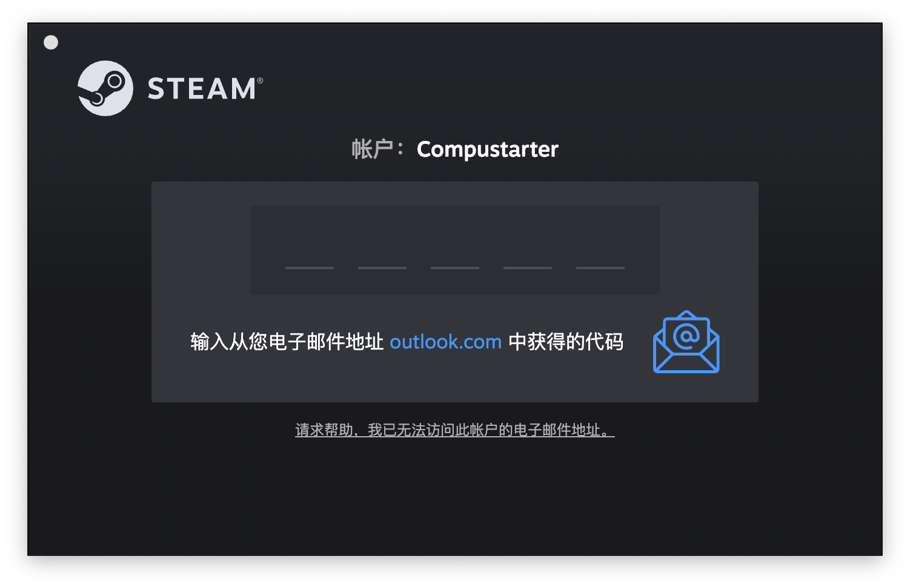
登录你的电子邮件，将获取的验证码填入验证窗口即可完成登录。
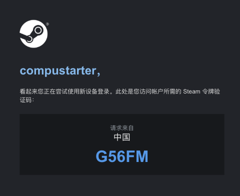
Q&A¶
Q1：连接 Steam 登录或注册时提示网络错误¶
A1：你可下载 Watt Toolkit（原 Steam++） 或 UU 加速器 来修复部分地区无法连接 Steam 服务器的问题。
Q2：新账号无法添加 Steam 好友¶
A2：你需要在 Steam 商店中消费满 5 美元才可解锁好友功能。